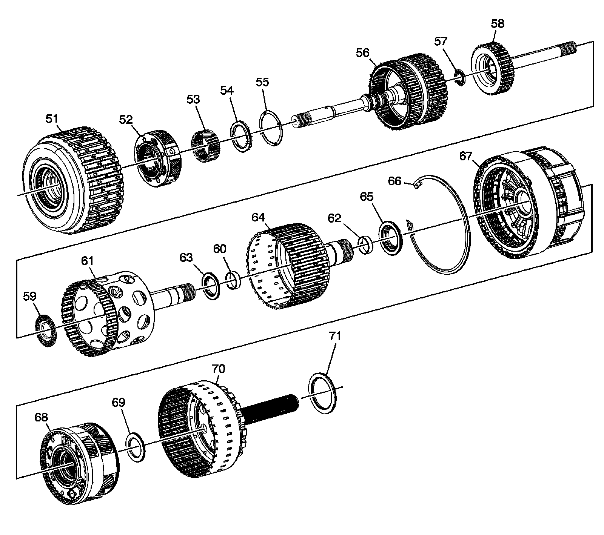
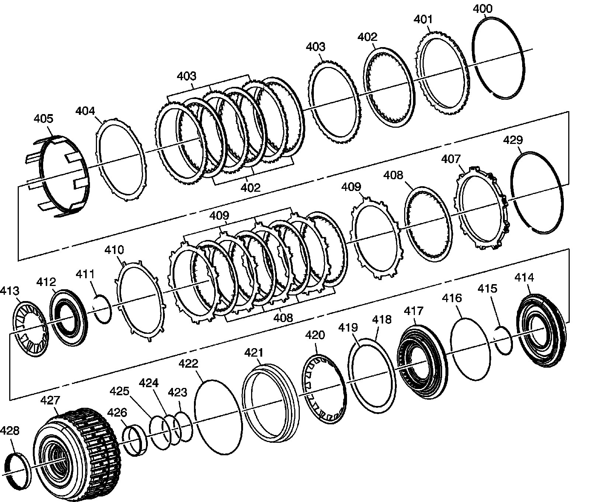
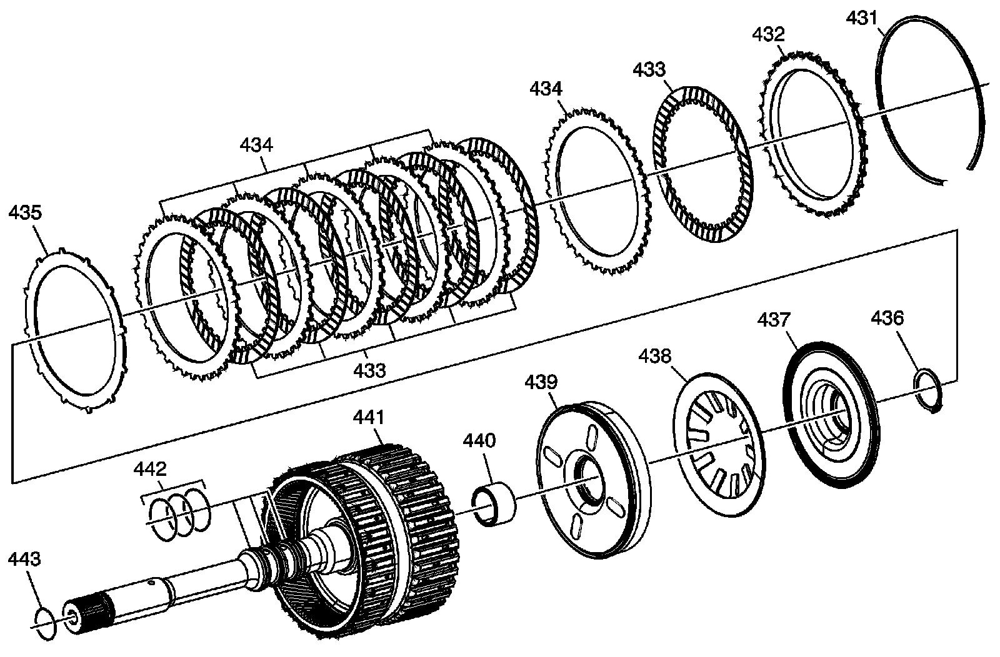
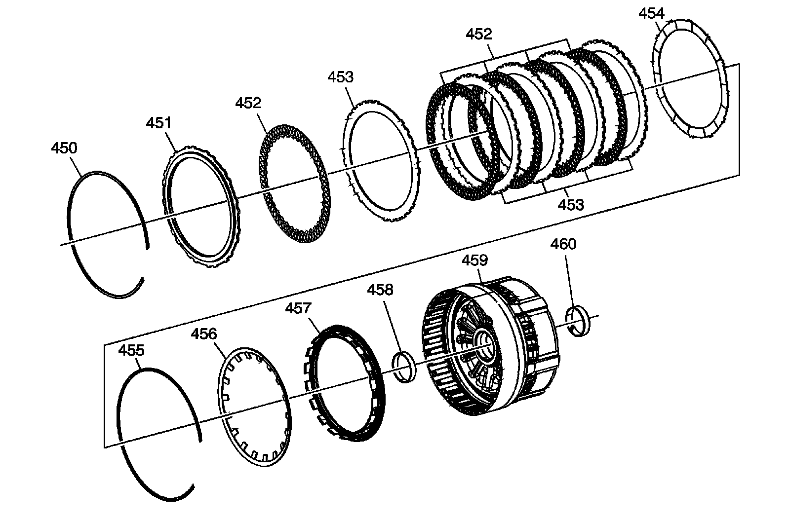
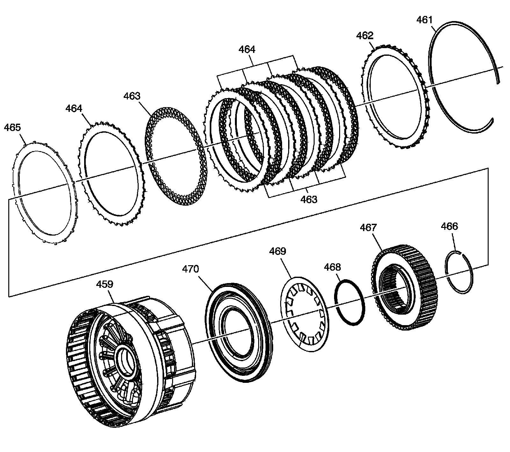
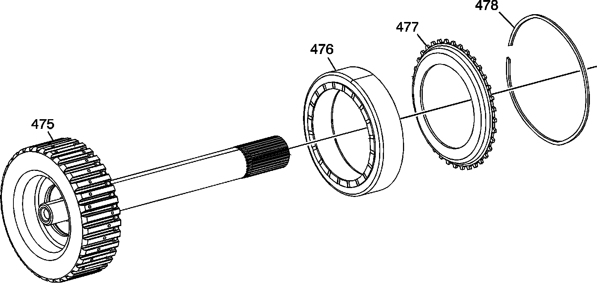

Clutch Assemblies and Associated Parts
Disassembled Views (6L80)
Clutch Assemblies and Associated Parts:

51 - 1-2-3-4 and 3-5 Reverse Clutch Assembly
52 - Input Carrier Assembly
53 - Input Sun Gear
54 - Input Sun Gear Thrust Bearing
55 - Input Sun Gear Thrust Washer
56 - 4-5-6 (w/ Turbine Shaft) Clutch Assembly
57 - Turbine Shaft Thrust Bearing Assembly
58 - 4-5-6 Clutch (w/ Output Carrier Shaft and Dampener) Hub Assembly
59 - 4-5-6 Clutch Hub Thrust Bearing Assembly
60 - Output Carrier Inner Sun Gear Shaft (Front) Bushing
61 - 1-2-3-4 Clutch (w/ Output Carrier Inner Sun Gear Shaft) Hub Assembly
62 - Output Carrier Inner Sun Gear Shaft Bushing
63 - 1-2-3-4 Clutch Hub Thrust Bearing Assembly
64 - 2-6 and 3-5 Reverse Clutch (w/ Output Carrier Outer Sun Gear Shaft) Hub Assembly
65 - 2-6 and 3-5 Reverse Clutch Hub Thrust Bearing Assembly
66 - Center Support Retaining Ring
67 - Center (w/ 2-6 Low and Reverse Clutch) Support Assembly
68 - Output Carrier Assembly
69 - Output Carrier Thrust Bearing Assembly
70 - Output Shaft Assembly - Model Dependent
71 - Output Shaft Thrust Bearing Assembly
1-2-3-4 and 3-5 Reverse Clutch Assembly:

400 - 3-5 Reverse Clutch Backing Plate Retaining Ring
401 - 3-5 Reverse Clutch Backing Plate
402 - 3-5 Reverse Clutch Plate Assembly
403 - 3-5 Reverse Clutch Plate
404 - 3-5 Reverse Clutch (Waved) Plate
405 - 3-5 Reverse Clutch Apply Ring
407 - 1-2-3-4 Clutch Backing Plate
408 - 1-2-3-4 Clutch Plate Assembly
409 - 1-2-3-4 Clutch Plate
410 - 1-2-3-4 Clutch (Waved) Plate
411 - 1-2-3-4 Clutch Piston Dam Retaining Ring
412 - 1-2-3-4 Clutch Piston Dam Assembly
413 - 1-2-3-4 Clutch Spring
414 - 1-2-3-4 Clutch Piston
415 - 1-2-3-4 Clutch Piston Housing Retaining Ring
416 - 1-2-3-4 Clutch Piston Seal
417 - 1-2-3-4 Clutch Piston Housing
418 - 3-5 Reverse Clutch Piston Dam (O-ring) Seal
419 - 3-5 Reverse Clutch Piston Inner Seal
420 - 3-5 Reverse Clutch Spring
421 - 3-5 Reverse Clutch Piston
422 - 3-5 Reverse Clutch Piston Outer Seal
423 - 1-2-3-4 Clutch Piston Inner Seal
424 - 1-2-3-4 Clutch Piston Housing Seal
425 - 1-2-3-4 Clutch Piston Housing Seal
426 - 1-2-3-4 and 3-5 Reverse Clutch Housing Rear Bushing
427 - 1-2-3-4 and 3-5 Reverse Clutch Housing Assembly
428 - 1-2-3-4 and 3-5 Reverse Clutch Bearing Assembly
429 - 1-2-3-4 Clutch Backing Plate Retaining Ring
4-5-6 (w/Turbine Shaft) Clutch Assembly:

431 - 4-5-6 Clutch Backing Plate Retaining Ring
432 - 4-5-6 Clutch Backing Plate
433 - 4-5-6 Clutch Plate Assembly
434 - 4-5-6 Clutch Plate
435 - 4-5-6 Clutch (Waved) Plate
436 - 4-5-6 Clutch Piston Dam Retaining Ring
437 - 4-5-6 Clutch Piston Dam Assembly
438 - 4-5-6 Clutch Spring
439 - 4-5-6 Clutch Piston Assembly
440 - Output Carrier Shaft Housing Bushing
441 - 4-5-6 (w/Turbine Shaft) Housing Assembly
442 - Turbine Shaft Fluid Seal Ring
443 - Turbine Shaft (O-ring) Seal
2-6 Clutch Assembly:

450 - 2-6 Clutch Backing Plate Retaining Ring
451 - 2-6 Clutch Backing Plate
452 - 2-6 Clutch Plate Assembly
453 - 2-6 Clutch Plate
454 - 2-6 Clutch (Waved) Plate
455 - 2-6 Clutch Spring Retaining Ring
456 - 2-6 Clutch Spring
457 - 2-6 Clutch Piston Assembly
458 - Output Carrier Outer Sun Gear Shaft (Front) Bushing
459 - Center Support Assembly
460 - Output Carrier Outer Sun Gear Shaft Rear Bushing
Low and Reverse Clutch Assembly:

459 - Center Support Assembly
461 - Low and Reverse Clutch Backing Plate Retaining Ring
462 - Low and Reverse Clutch Backing Plate
463 - Low and Reverse Clutch Plate Assembly
464 - Low and Reverse Clutch Plate
465 - Low and Reverse Clutch (Waved) Plate
466 - Low and Reverse Clutch Spring Retaining Ring
467 - Low Clutch Sprag Assembly
468 - Low Clutch Sprag Seal
469 - Low and Reverse Clutch Spring
470 - Low and Reverse Clutch Piston Assembly
4-5-6 Clutch Hub Assembly:

475 - 4-5-6 Clutch (w/ Output Carrier Shaft) Hub Assembly
476 - 4-5-6 Clutch Dampener
477 - 4-5-6 Clutch Dampener Apply Plate
478 - 4-5-6 Clutch Dampener Retaining Ring